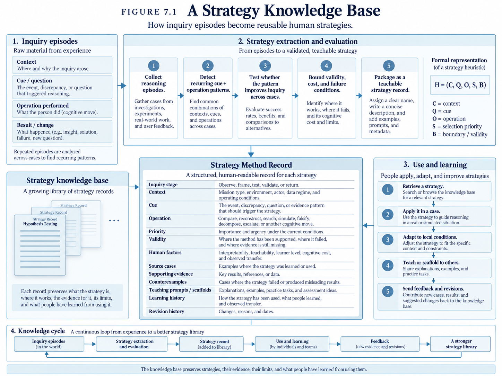

01 · DOMAIN
Represent the world
Models, scenarios, observations, actions, and outcomes create a shared experimental world.
Models and AI are most useful when they make assumptions testable, uncertainty visible, and competing explanations easier to compare.
Models, scenarios, observations, actions, and outcomes create a shared experimental world.
Competing explanations and candidate strategies remain explicit long enough to be tested.
Paired counterfactual experiments hold what should stay fixed and vary what matters.
Uncertainty, robustness, failure boundaries, and provenance are part of the result.
Claims, contradictions, revisions, and reusable reasoning strategies remain connected to their evidence.
Humans inspect, challenge, steer, and decide what conclusions deserve to survive.

CoAgentics is a computational research environment for reciprocal human-AI inquiry. It connects domain models, strategies, experiments, validation, knowledge, and a human workbench.
The conversational model helps interpret and explain. Authoritative conclusions remain grounded in deterministic evidence, explicit experiments, and human review.
The long-term aim is not a machine that decides for people. It is a system that helps people investigate difficult questions and become better at the reasoning those questions require.
Concrete examples of how the research method is used in different domains.
Build a controlled economic environment, vary information and incentives, compare competing behavioral models, and confirm the result on held-out conditions. The emphasis is on observable behavior, experimental identification, and clear limits.
View economics case study →